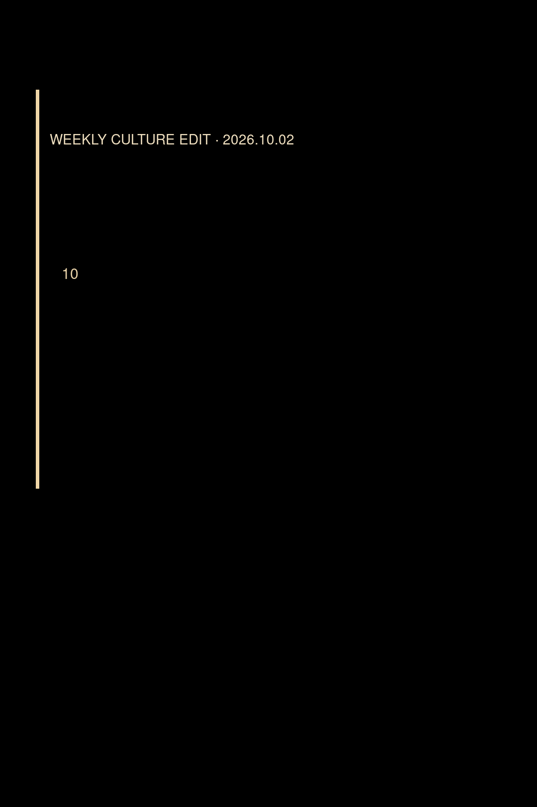

01
本期推荐
《目送》
龙应台
> 作品档案｜出版：2009｜豆瓣：8.6（214,985 人评价）｜类型：散文 / 亲情 / 生活书写 豆瓣条目：https://book.douban.com/subject/3995526/
WEEKLY CULTURE EDIT · 12
十月初的日历开始变密：项目、行程、消息流一层层叠上来，人很容易被切成碎片。这一期不谈“进入世界”“校准感受力”或“调距离”，而想问更朴素的一件事——怎样把日子过得厚一点：让注意力落回一顿饭、一条巷子、一张唱片、一片红叶，而不是只在标题之间掠过。

本期主题
秋天，把日子过得厚一点｜本周 10 个文化推荐
20261002
THE ISSUE
本期依据截至 2026 年 10 月 2 日的公共榜单、长期口碑、院线与讨论信号交叉筛选。文牧野《欢迎来龙餐馆》暑期后口碑仍高；北京香山红叶季与西郊线运力保障进入公众视野。以下十项均未沿用往期主推荐，也未使用“新作观察位”。
BOOKS
本期精选 3 部
01
本期推荐
龙应台
> 作品档案｜出版：2009｜豆瓣：8.6（214,985 人评价）｜类型：散文 / 亲情 / 生活书写 豆瓣条目：https://book.douban.com/subject/3995526/
02
现代经典
[英] 毛姆
> 作品档案｜出版：2006｜豆瓣：8.9（226,750 人评价）｜类型：长篇小说 / 艺术 / 现代经典 豆瓣条目：https://book.douban.com/subject/1858513/
03
本期推荐
李泽厚
> 作品档案｜出版：2009｜豆瓣：9.2（36,957 人评价）｜类型：美学 / 人文 / 艺术史 豆瓣条目：https://book.douban.com/subject/3410718/
SCREEN
本期精选 3 部
01
本期推荐
文牧野
> 作品档案｜上映：2026｜豆瓣：8.7（566,347 人评价）｜类型：电影 / 剧情 / 战争 豆瓣条目：https://movie.douban.com/subject/35811064/
02
本期推荐
申元浩 / 柳英雅
> 作品档案｜上映：2015｜豆瓣：9.7（1,049,819 人评价）｜类型：剧集 / 剧情 / 家庭 / 青春 豆瓣条目：https://movie.douban.com/subject/26302614/
03
经典补课
朱塞佩·托纳多雷｜全球影史经典补课位
> 作品档案｜上映：1988｜豆瓣：9.2（740,254 人评价）｜类型：电影 / 剧情 / 爱情 豆瓣条目：https://movie.douban.com/subject/1291828/
EDITOR'S NOTE
文化产品最好的趋势，不是让我们跑得更快，而是让我们重新有能力停下来。
本期完整文章保留了推荐理由、风险提示与参考来源；欢迎从任一部作品出发，再回到自己的书架和片单。
ARCHIVE
持续更新